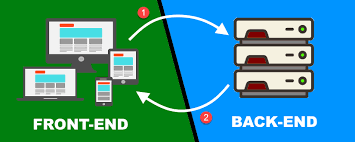

BACKEND
 El backend es la parte del desarrollo web que se encarga de que toda la lógica de una página web funcione. Se trata del conjunto de acciones que pasan en una web pero que no vemos como, por ejemplo, la comunicación con el servidor. El backend es esa parte invisible pero fundamental en todo proyecto web, y a la que es de vital importancia darle toda la trascendencia que merece. Por eso, en este artículo vamos a hablar sobre qué es backend y por qué es necesario realizar un buen desarrollo del mismo. Una página web no solo tiene que ser visualmente atractiva, bien estructurada y con contenido de calidad. Otros aspectos son igual de importantes como la rapidez de carga, la seguridad o el acceso a las búsquedas, por lo que el desarrollo del backend es muy importante.